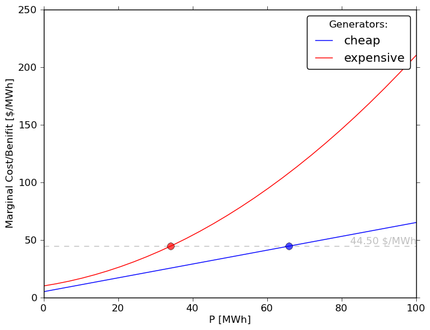

ED tries to allocate available generation to meet the current system load at lowest cost. The classic text is Wood & Wollenburg.
\(\min \sum_g C_g(P_g)\)
\(\mathrm{s.t.}\/ P_{\min (g)} \leq P_g \leq P_{\max (g)} \/ \forall \/ \mathrm{generators}\/(g)\)
\(\mathrm{s.t.}\/ \sum_g P_{g}= P_{\mathrm{load}}\)
In this mathematical formulation generators are indexed by \(g\). \(P_g\) is a generator’s power output and \(C_g()\) is its cost function. The objective is to minimize the total cost. There are two constraints:
Let’s say you have made a folder called mydispatch and put the information about your problem in the folder. Then if you run the script:
from minpower import solve
solve.problem('mydispatch/')
you get a plot:

and a spreadsheet:
generator name, u, P, IC cheap, True, 65.4, 44.5 expensive, True, 38.7, 44.5
These outputs show that the problem’s two generators (named cheap and expensive) are being dispatched so that their incremental costs (the vertical axis in the plot and IC in the spreadsheet) are equal. Each generator’s incremental cost curve is shown in the plot, with a dot on its current real power output (P). Because this is a dispatch each generator is on (u=True) unless specified in the input spreadsheet.
These outputs are saved in the mydispatch folder as dispatch.png and dispatch.csv.
minpower just looks for the files in the mydispatch directory that describe the generators and load.
Tell it the specifics of your problem by editing the generator file (generators.csv):
name, P max, cost curve equation cheap, 100, 200 + 5 * P + .3 P^2 expensive,100, 300 + 10 P + .25 P^2 + .005 P^3
and load file (loads.csv):
name, Pd Seattle City Light, 50 Tacoma Power, 50
Note
For more information about what options you can specify in each spreadsheet see: Data Input.